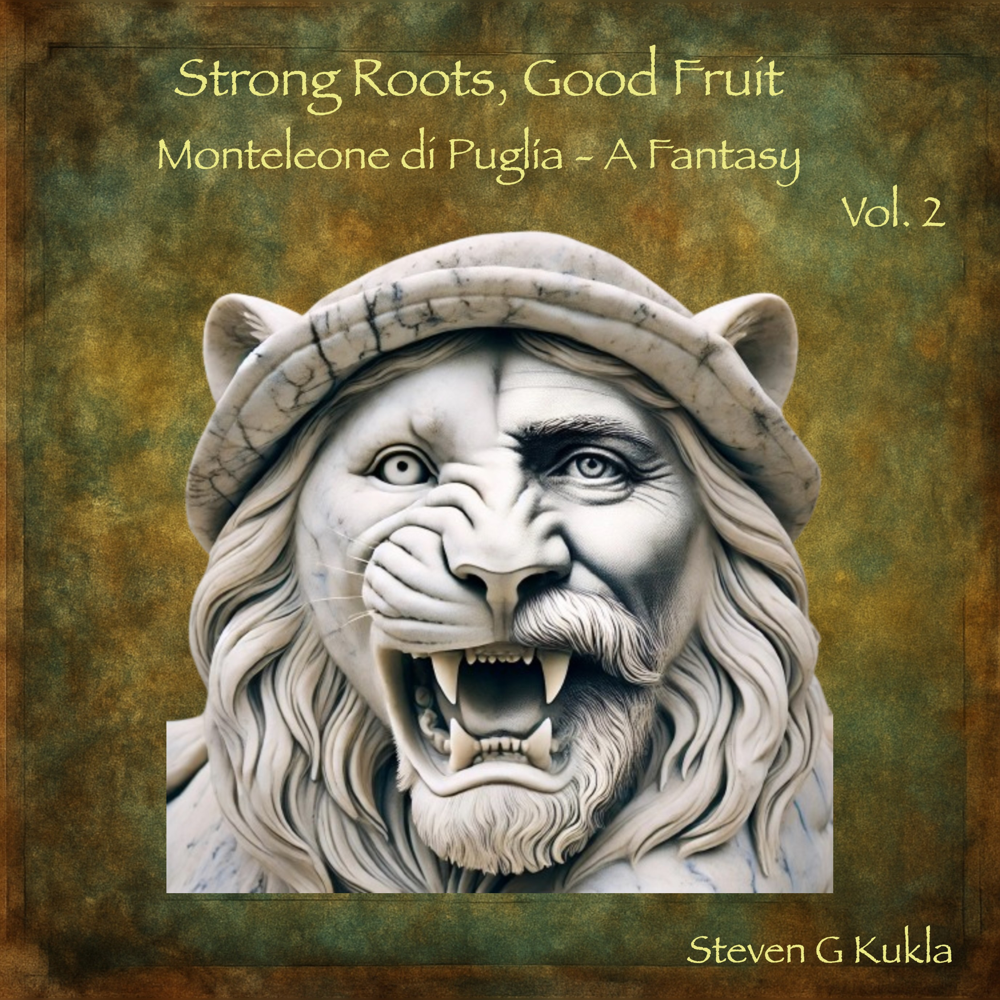

Companion Songs and Music
Flag icons designate Italian song versions

Volume 1
1-1 Opening: bit.ly/4rwz1MZ
1-2 Strong Roots Good Fruit: bit.ly/4cSeRIK
1-3 Daunia's Song: bit.ly/3N1xH5O
1-4 Shepherd's Song: bit.ly/4aR4K4D
1-5 Song of the Traturri: bit.ly/4s9dlXi
1-6 Old Song of the Church Leaders: bit.ly/3OAbfRJ
1-7 Old Song of the Civic Leaders: bit.ly/3ZR3Boz
1-8 New Song of Joy: bit.ly/4aBbi8D
1-9 Song of Babin the Stone Carver: bit.ly/4cNaY81
1-10 Oh, Oh, Oh, Leo: bit.ly/4aFCj9q
🇮🇹1-11 Oh, Oh, Leo (Italian): bit.ly/3ZVEHnF
1-12 New Civic Song: bit.ly/4kSq2TT
1-13 Waldensian Song of Hope: bit.ly/4aRckvS
1-14 Song of the Great Grand Inquisitor: bit.ly/4rASPix
1-15 Village Women's Song of Protest: bit.ly/4tPtKC1
1-16 Song of the Emigrants: bit.ly/4b75ALD
1-17 Song of the Agenti: bit.ly/4kWcW87
1-18 Song of Despair and Decision: bit.ly/4kQNpgy
🇮🇹1-19 Song of Despair and Decision (Italian): bit.ly/4cccKiX

Volume 2
2-1 Song of Scaramuccia: bit.ly/3ZRIFxN
2-2 Song of the Women's Roar: bit.ly/4aBcjxt
2-3 Song of Acceptance: bit.ly/479eCFz
2-4 Song of Amadin: bit.ly/4b93s64
2-5 War No More: bit.ly/4tVm1lF
2-6 Educate and Advocate: bit.ly/3MtvZtX
🇮🇹2-7 Educate and Advocate (Italian): bit.ly/4s7lFGX
2-8 Song of the Spirits of the Ancestors: bit.ly/40sitd5
2-9 Immigrants No More: bit.ly/4rC8Pkg
2-10 La Leonessa Foot Press: bit.ly/4b8vCyb
2-11 La Leonessa: bit.ly/4tV1Owg
2-12 Closing: bit.ly/4aY5dCa